lorenz_partial_additive_splitmode_p30_obsnoise001_nd75_init15_pcainit_autodim__lc_sweepProject: Lorenz_INDpartial_NDInitSweep_autodim_D1_NormTrue__JacobianODE
Launched: 2026-04-22T04:25:10Z
Completed: 2026-04-22T08:25:48Z
Outcome: complete_clean
Git: latent-JacobianODE @ 944fcaf
Expected runs: 5
lorenz_partial_additive_splitmode_p30_obsnoise001_nd75_init15_pcainit_autodim__lc_sweepDescription
Lorenz partial additive coupling, obs_noise=0.01, n_delays=75, prediction_steps=30, traj_init_steps=15. Split-mode trajectory loss (most_recent at train and val) + uniform encoder-decoder recon. n_target_dims auto-picked via PCA threshold=0.99. Encoder init via PCA-basis rotation (init_pca_basis=true) — at init the encoder is V @ x where V is the PCA basis of the noisy training delay embeddings. 5-run LC sweep over {0, 1e-6, 1e-5, 1e-4, 1e-3}.
Hypothesis
PCA-basis init places z_dyn at init exactly in the top-n_target PCs of the (noisy) training embedding — the linear subspace that captures most variance of the signal. The dynamics MLP starts with a near-optimal linear chart and only has to learn nonlinear corrections, vs identity init where it starts on the lag-axis basis (also sensible but linearly misaligned with the principal directions). Expect comparable or modestly better val trajectory loss compared to the identity-init companion sweep at the same n_delays. If PCA wins consistently across noise levels, switch the convention; if equal, identity init wins on interpretability.
Success criteria
Swept axes (2): model.n_target_dims_pca_cum_var, training.lightning.loop_closure_weight
Chosen run (by best_traj_loss): 34et2hk9 — traj_loss=0.00036, MASE=0.5082, R²=0.9990, LC loss=8.032, epoch=97.0
Swept-axis values at chosen run: model.n_target_dims_pca_cum_var=0.993244 · training.lightning.loop_closure_weight=0
Runs analyzed: 5 (expected 5)
| run_idx | run_id | model.n_target_dims_pca_cum_var |
training.lightning.loop_closure_weight |
best_traj_loss | best_MASE | R² | LC loss | epoch |
|---|---|---|---|---|---|---|---|---|
| 0 | 34et2hk9 |
0.993244 | 0 | 0.00036 | 0.5082 | 0.9990 | 8.032 | 97.0 |
| 2 | bqr94eu5 |
0.993244 | 1.0e-05 | 0.00037 | 0.4916 | 0.9990 | 0.915 | 154.0 |
| 3 | sp745jkz |
0.993244 | 1.0e-04 | 0.00038 | 0.4939 | 0.9990 | 0.186 | 154.0 |
| 1 | 1rjo2r7a |
0.993244 | 1.0e-06 | 0.00040 | 0.5253 | 0.9989 | 4.304 | 83.0 |
| 4 | i3ebq21q |
0.993244 | 0.001 | 0.00049 | 0.5318 | 0.9987 | 0.042 | 101.0 |
| Criterion | Verdict | Note |
|---|---|---|
| All 5 runs train without divergence | Unknown | |
| Best val traj loss is comparable or better than identity-init companion sweep at the same LC | Unknown | |
| Convergence (epochs to best val loss) is faster than identity-init companion (PCA gives a head start) | Unknown | |
| λ-spectrum at best LC matches identity-init companion within tolerance — same dynamics, just different starting basis | Unknown |
Automated verdicts use simple numeric-threshold parsing and may mis-classify qualitative criteria. The Discussion section below takes precedence.
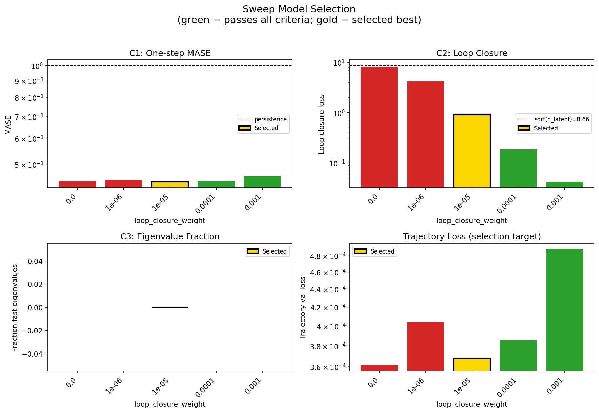
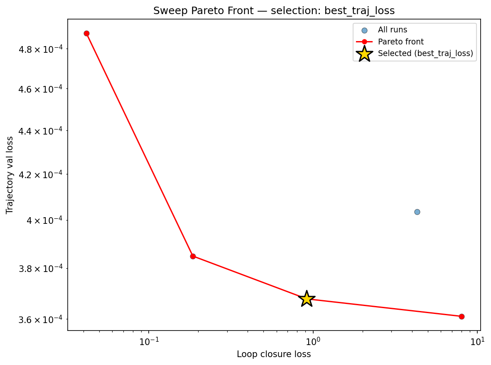
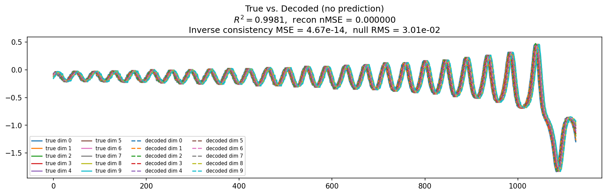
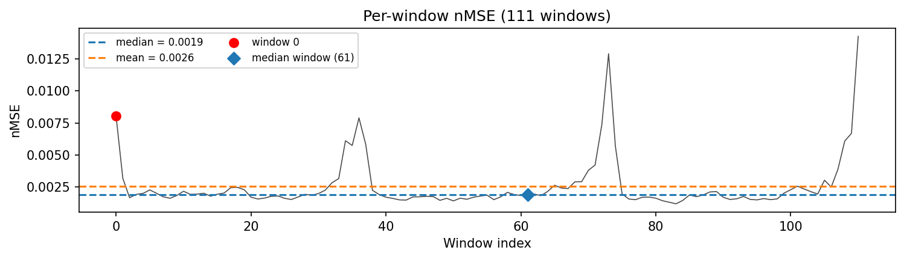
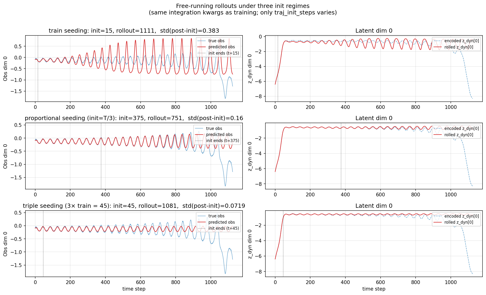
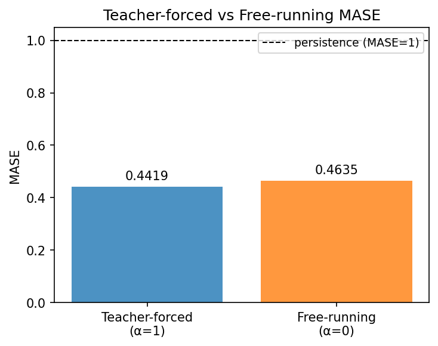
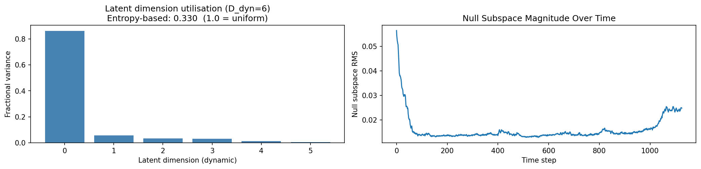
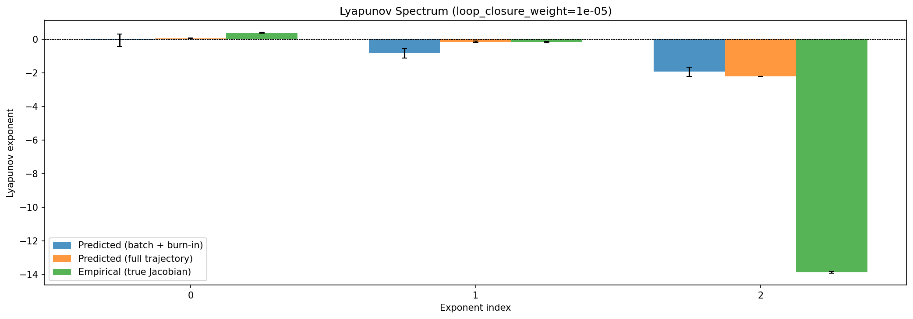
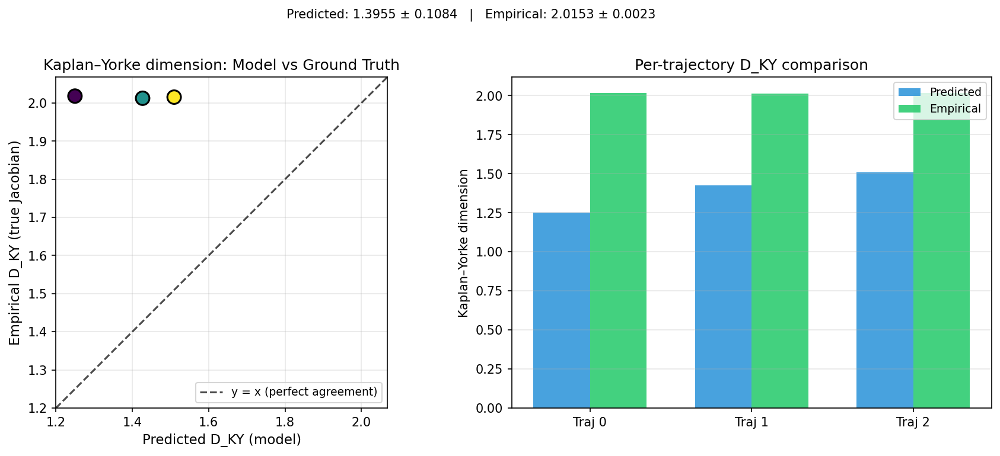
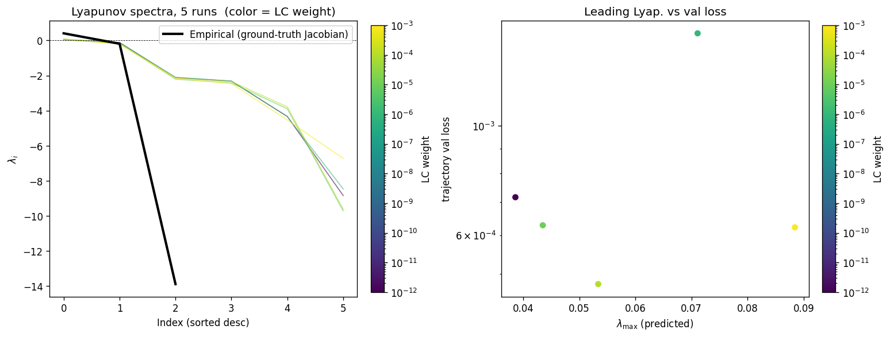
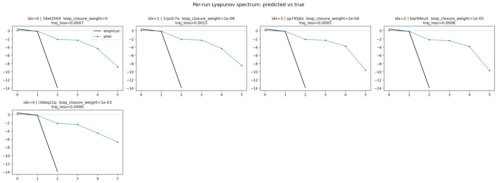
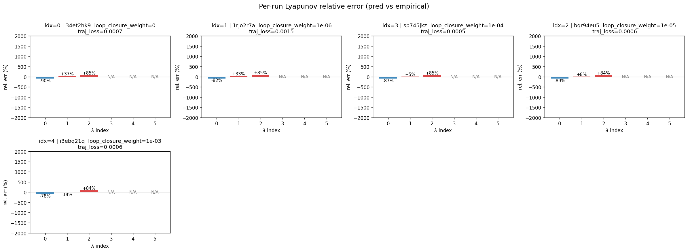
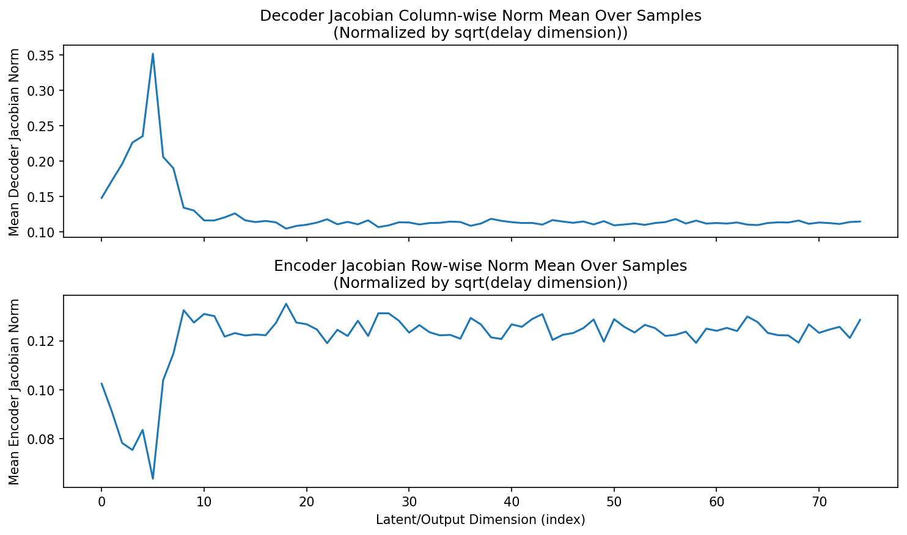
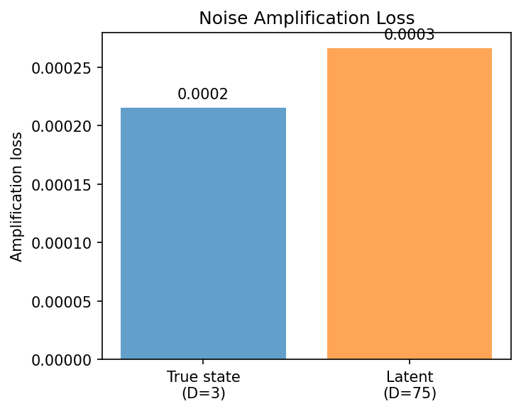
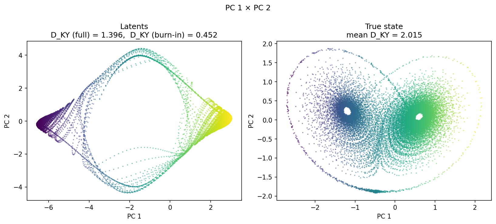
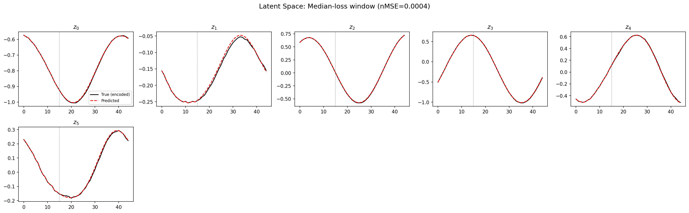
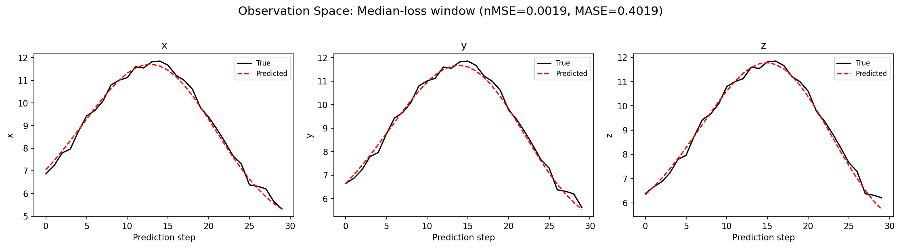
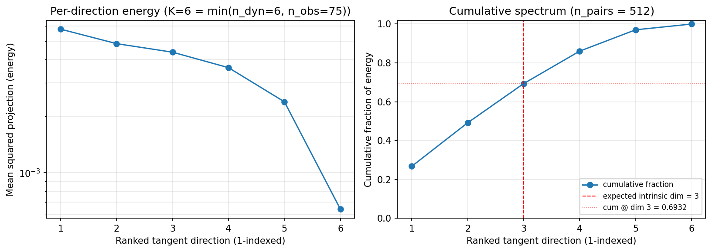
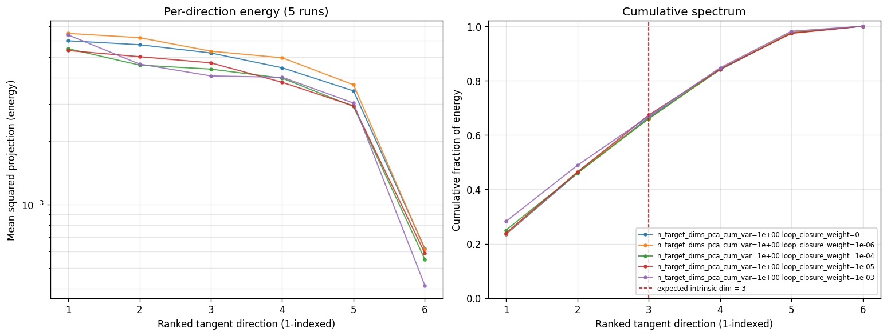
(to be written)
run_analytics stdoutrun_analyticsNo run_id provided — selecting best run from group 'lorenz_partial_additive_splitmode_p30_obsnoise001_nd75_init15_pcainit_autodim__lc_sweep' ...
Found 5 total runs in JacobianODE/Lorenz_INDpartial_NDInitSweep_autodim_D1_NormTrue__JacobianODE (group=lorenz_partial_additive_splitmode_p30_obsnoise001_nd75_init15_pcainit_autodim__lc_sweep)
All runs (state, loop_closure_weight, tangent_entropy_weight, kl_dyn_weight):
34et2hk9: state=finished, lc=0.0, te=0.0, kl_dyn=0.0
1rjo2r7a: state=finished, lc=1e-06, te=0.0, kl_dyn=0.0
sp745jkz: state=finished, lc=0.0001, te=0.0, kl_dyn=0.0
bqr94eu5: state=finished, lc=1e-05, te=0.0, kl_dyn=0.0
i3ebq21q: state=finished, lc=0.001, te=0.0, kl_dyn=0.0
slurm_timeout_min not found in any run config — falling back to 180 min
Including 34et2hk9 (lc=0.0): use_all_runs=True (state=finished)
Including 1rjo2r7a (lc=1e-06): use_all_runs=True (state=finished)
Including sp745jkz (lc=0.0001): use_all_runs=True (state=finished)
Including bqr94eu5 (lc=1e-05): use_all_runs=True (state=finished)
Including i3ebq21q (lc=0.001): use_all_runs=True (state=finished)
Found 5 effectively-done sweep runs:
loop_closure_weight=0.0, tangent_entropy_weight=0.0, kl_dyn_weight=0.0 -> run_id=34et2hk9
loop_closure_weight=1e-06, tangent_entropy_weight=0.0, kl_dyn_weight=0.0 -> run_id=1rjo2r7a
loop_closure_weight=1e-05, tangent_entropy_weight=0.0, kl_dyn_weight=0.0 -> run_id=bqr94eu5
loop_closure_weight=0.0001, tangent_entropy_weight=0.0, kl_dyn_weight=0.0 -> run_id=sp745jkz
loop_closure_weight=0.001, tangent_entropy_weight=0.0, kl_dyn_weight=0.0 -> run_id=i3ebq21q
n_dims=75, n_latent=75, n_dyn=6, dt=0.0150
run=34et2hk9: DiagnosticMetrics(one_step_mase=0.44361943006515503, loop_closure_loss=8.032123565673828, fast_eigenvalue_fraction=0.0, trajectory_val_loss=0.0003610104613471776) (from W&B history)
run=1rjo2r7a: DiagnosticMetrics(one_step_mase=0.44728904962539673, loop_closure_loss=4.304082870483398, fast_eigenvalue_fraction=0.0, trajectory_val_loss=0.0004034688463434577) (from W&B history)
run=bqr94eu5: DiagnosticMetrics(one_step_mase=0.4411848187446594, loop_closure_loss=0.9152218103408813, fast_eigenvalue_fraction=0.0, trajectory_val_loss=0.0003677794011309743) (from W&B history)
run=sp745jkz: DiagnosticMetrics(one_step_mase=0.44378870725631714, loop_closure_loss=0.18559539318084717, fast_eigenvalue_fraction=0.0, trajectory_val_loss=0.0003849111089948565) (from W&B history)
run=i3ebq21q: DiagnosticMetrics(one_step_mase=0.45969128608703613, loop_closure_loss=0.041765645146369934, fast_eigenvalue_fraction=0.0, trajectory_val_loss=0.0004878092440776527) (from W&B history)
Ranking method: best_traj_loss
Best run ID: bqr94eu5
Best loop_closure_weight: 1e-05
Best tangent_entropy_weight: 0.0
Best kl_dyn_weight: 0.0
Best traj loss: 0.000368
Criteria applied: ['C1', 'C2', 'C3']
Surviving: 3 / 5
Auto-selected run_id: bqr94eu5
======================================================================
PARETO FRONTIER RUNS (4 runs)
======================================================================
Run ID LC Loss Traj Val Loss
------------ -------------- --------------
i3ebq21q 0.041766 0.000488
sp745jkz 0.185595 0.000385
bqr94eu5 0.915222 0.000368 <-- selected
34et2hk9 8.032124 0.000361
======================================================================
RANKING METHOD COMPARISON (over 3 survivors)
======================================================================
Method Run ID LC Loss Traj Val Loss
---------------------- ------------ -------------- --------------
best_traj_loss bqr94eu5 0.915222 0.000368 <-- active
pareto_knee sp745jkz 0.185595 0.000385
geo_rank bqr94eu5 0.915222 0.000368
minimax_rank sp745jkz 0.185595 0.000385
geo_log_score bqr94eu5 0.915222 0.000368
minimax_log_score sp745jkz 0.185595 0.000385
======================================================================
Loading run bqr94eu5 from JacobianODE/Lorenz_INDpartial_NDInitSweep_autodim_D1_NormTrue__JacobianODE ...
Train dataset shape: torch.Size([23782, 45, 75])
Validation dataset shape: torch.Size([7567, 45, 75])
Test dataset shape: torch.Size([3243, 45, 75])
Train trajectories dataset shape: torch.Size([22, 1126, 75])
Validation trajectories dataset shape: torch.Size([7, 1126, 75])
Test trajectories dataset shape: torch.Size([3, 1126, 75])
Loading checkpoint epoch=154-step=31000.ckpt...
Computing reconstruction ...
Computing MASE ...
Teacher-forced MASE: 0.4419
Free-running MASE: 0.4635
Computing latent utilization ...
Entropy-based utilization: 0.330
Null subspace mean RMS: 1.682582e-02
Computing Lyapunov exponents ...
Computing full-trajectory Lyapunov (3 test trajs, T=1126) ...
Predicted Lyapunov exponents (batch+burn-in, 128 windowed trajs):
λ_1 = -0.0585 ± 0.3786
λ_2 = -0.8383 ± 0.2897
λ_3 = -1.9328 ± 0.2728
λ_4 = -2.2012 ± 0.2966
λ_5 = -3.5148 ± 0.2633
λ_6 = -9.5703 ± 2.1783
Predicted Lyapunov exponents (full-length, 3 test trajs):
λ_1 = +0.0573 ± 0.0102
λ_2 = -0.1515 ± 0.0308
λ_3 = -2.2115 ± 0.0059
λ_4 = -2.3839 ± 0.0209
λ_5 = -3.8013 ± 0.1039
λ_6 = -10.0082 ± 0.0895
Empirical Lyapunov exponents (mean ± std):
λ_1 = +0.3846 ± 0.0251
λ_2 = -0.1716 ± 0.0444
λ_3 = -13.8799 ± 0.0398
Mean KY dim (predicted): 1.396 ± 0.108
Mean KY dim (empirical): 2.015 ± 0.002
Mean KY dim (burn-in): 0.452 ± 0.602
Computing prediction windows ...
Windows: 111 — nMSE min=0.0012, median=0.0019, mean=0.0026, max=0.0142
Computing long-trajectory free-running rollouts ...
Computing encoder/decoder Jacobians ...
encoder_jacobian: (128, 75, 75)
decoder_jacobian: (128, 75, 75)
Computing amplification loss ...
Amplification loss — True state: 0.000216
Amplification loss — Latent: 0.000267
Computing tangent space spectrum ...